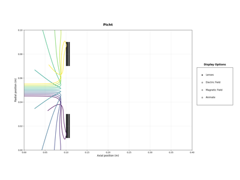
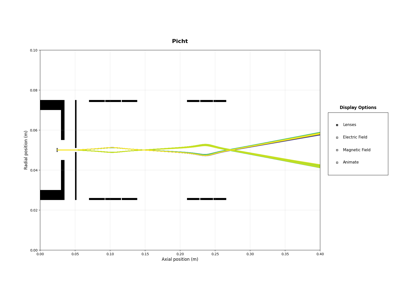

Gallery
This gallery contains examples demonstrating how to use Picht, moving up from basic cylindrical electrodes, to understanding the properties of unipotential lenses, to finally being able to design and chain complex multi-lens systems.
Begin at electric and magnetic lens creation, work your way through the unipotential lens series, and then try your hand at the SEM example.
Electrode Creation
Unipotential Lenses

Unipotential Lenses: Deflection
Unipotential Lenses: Deflection

Full-Scale SEM Simulation
Magnetic Lens Creation